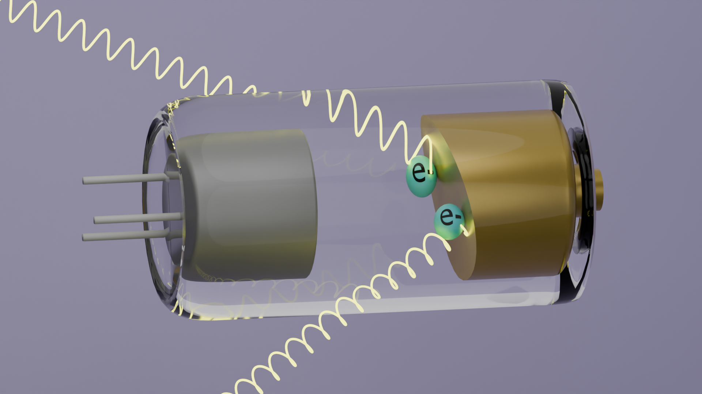
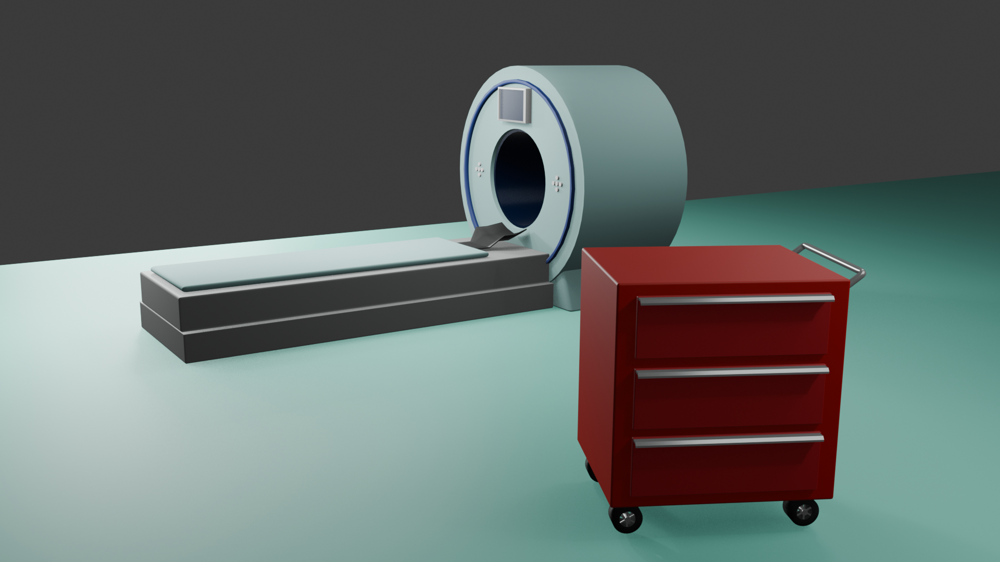
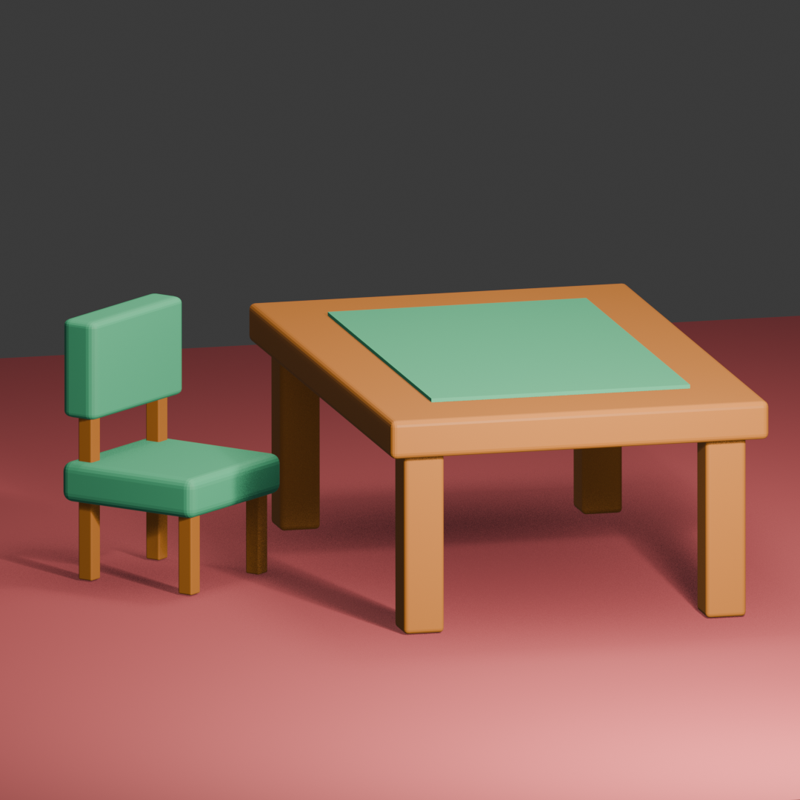
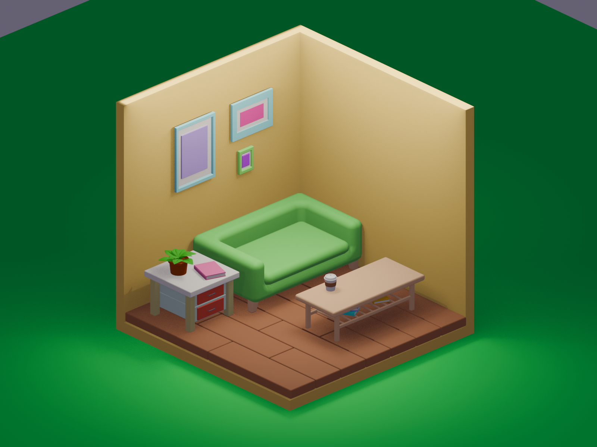

加古 彩乃
診療放射線技師 & 3DCG クリエイター
医療現場での放射線技師としての経験を土台に、CT画像の3D再構成への関心からBlenderによる3DCG制作を独学で開始。3DCGを通して新たなキャリアのため日々、邁進中です！
Welcome to my portfolio
モデルを作成中
Thanks for viewing!
My History
大学進学
小学生の頃からバスケをしており、怪我をした際にレントゲンやMRI検査を受けることが多く、将来は医療を通じて社会に貢献したいと考えるようになり、放射線技師を志した。
大学では、診断に必要な画像を正確かつ安全に提供するため、解剖学をはじめとした基礎医学、放射線の原理や人体への影響、画像工学、医療機器の仕組みについて学んだ。これらを通じて、放射線技師として必要な知識と技術を身につけた。
大学卒業・放射線技師免許取得
医療法人財団 明理会 行徳総合病院 入職
一般撮影、骨密度検査、マンモグラフィ、CT・MRI検査、透視下検査、手術室業務など、幅広い検査に携わった。
急性期医療を担う総合病院という環境の中で、循環器科、泌尿器科、整形外科をはじめとした多様な診療科の検査・治療に関わり、さまざまな疾患および患者様への対応を臨床現場を通して学んだ。
転職
転居のため、通勤圏を考慮し、行徳総合病院から白報会王子病院へ転職
医療法人社団 中央白報会 白報会王子病院 入職
一般撮影、骨密度検査、マンモグラフィ、CT検査、透視下検査に従事。
行徳総合病院では経験の少なかったバリウム検査を新たに習得。
また、整形外科診療に力を入れている環境の中で、整形領域の撮影機会を多く経験し、一般撮影（レントゲン）のポジショニング精度向上や再撮影率低減を意識した撮影技術の向上に努めた。
検診マンモグラフィ撮影認定診療放射線技師を取得
現在、放射線技師として勤務する中で特に、CT画像から骨や血管などの3D画像に再構成する業務にやりがいを感じていることから、３Dそのものに興味を持ち、Blenderを使った制作の独学を開始。3DCGを通して新しいキャリアに挑戦したいと考えている。
Skill
これまでに習得した技術とスキルです。
デザイナー
デザイナー書籍
- 素人っぽく見えないデザインのコツを教えてください。(ingectar-e著)
- デザイン入門教室 (坂本伸二著)
- プロンプトエンジニアリングの教科書 (クジラ飛行机著)
- Blender 完全入門 (カサハラCG著)
- 基礎からしっかり学べるBlender アニメーション入門講座 (Benjamin著)
放射線技師
撮影技術
一般撮影
胸部・腹部・整形領域
CT検査
造影・非造影、救急対応
MRI検査
頭部・脊椎・関節等
マンモグラフィ検査
骨密度検査
DXA
透視検査
上部・下部消化管、ERCP、バリウム検査 等
手術室業務
Cアーム操作、整形外科・心血管外科対応
画像処理
CT画像の3D再構成
医療画像編集・画像最適化
資格
Portfolio
書籍・YouTubeなどを参考に、分からないことはAIに聞くなどして制作しました。
3DCG（Blender）

X線発生原理
書籍：「基礎からしっかり学べるBlender アニメーション入門講座（Benjamin著）」を参考にX線が発生する原理を模した3Dアニメーションを制作。
制作：2026年5月

CT室
これまでの学びを応用してCT装置と救急カートの3DCGモデルを制作した。
制作：2026年4月
惑星探索
書籍：「Blender 完全入門 (カサハラCG)」を参考に制作した惑星探索の3Dモデル。
制作：2026年4月

